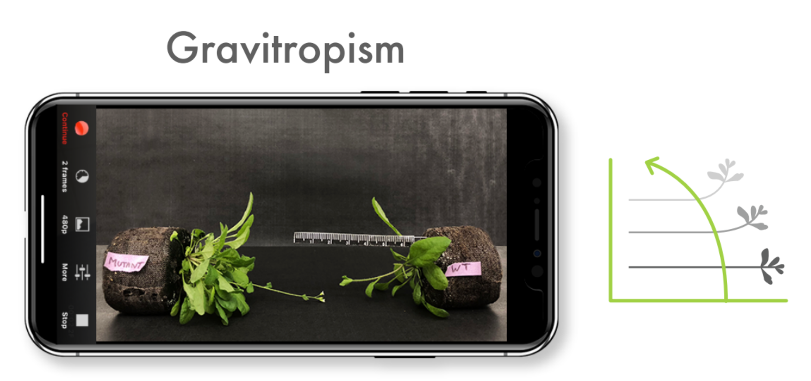

Step 1. Grow your specimens

Seven weeks before the actual experiment plant seeds. Plant five (replicate) pots for every genotype. Plant 6 seeds per pot. Plant extra wildtype (Columbia) as your control. For details on growing Arabidopsis click HERE.


Over time, thin seeds to one individual plant per pot using a forcep (tweezers). When your plant begins to flower for the first time, you are ready to begin running the experiment. If you are not ready to perform the experiment you can cut off the floweing stem and new ones will emerge.

Download Lapse It from the App Store.

Download Plant Tracer from the App Store. Here is a video that explains how to use the app.
Backdrop - A dull, black background ensures software can track movement
Cultivated Mutant and Wild Type Plants - You will need both genotypes of the Arabidopsis thaliana in order to measure them in Plant Tracer.
Plant Labels - These will be used to identify plant accession number.

Miniature Ruler - Rulers can be printed HERE. Print and cut out the ruler, then tape it to a straightened paperclip.

Phone Stand - You can use Binder Clips to hold your phone in place while recording your experiment.
Phone and Charger - You will need to use a charged smartphone or tablet with the free Lapse It app in order to record and upload your video to Plant Tracer.
Place a solid, dull background behind the flowering stems.
Insert the rulers into each pot so that the edge of the ruler is in the same focal plant as the flowering stem.
Place the Wild Type and Mutant labels on the appropriate plants.
Place the recording device close enough to fill the screens with the plant parts of interest.
For circumnutation plants are kept upright.

For gravitropism plants are placed on their side with their flowering "pointing" towards each other.
Turn your device to airplane mode foruninterrupted video capture. Plug your device into an electrical outlet to maintain battery power.
Open Lapse It Settings
a. Change the Frame Interval to 2
b. Change the Frames per second to 20
c. Use the highest resolution available
d. Keep all other settings the same
Move as close to the subject material as possible (flowering stems, ruler) so that it fills the screen. Open Lapse It, click on New Capture. Hit the red Capture button to begin recording. Leave the device recording for approximately 2 hours.
Click Render to save the recording. The rendered movie name should contain: mutant name, accession number (from the tag) your name (first initial and last name) and the date (month_day_year). Example: SALK_1234_JVALLE_08_05_2018
Upload and trim video - Open Plant Tracer and select either Gravitropism or Circumnutation. Upload your recording by tapping the Camera icon. Trim the video length using the sliders to remove the logo at the end or unnecessary footage.

Define Capture Interval - When uploading timelapse videos from Lapse It (See step 6, second action), specify the frame interval (number of pictures taken per minute) and the Render Setting Frames per second as 20.
Set the scale - Click Draw Line and tap on two spots on the ruler. If the line is not parallel with the ruler markings, click Undo and then Draw Line again until you are sure it is straight and that an accurate span can be measured.
Tap to measure span in millimeters - Type in ruler line length. Remember to add the value in millimeters.
Mark Apex - Tap to create and then center a box over the apex for tracking.
Mark Inflection Point (only for Gravitropism) - Tap a square at the point of maximum bending on the axis (replay the video if needed to confirm the precise inflection point). Tap Draw Line to connect the boxes, and for calibration enter the line distance.
Results - Tap Tracking to trace the apex and Show Result to see X and Y graphs and amplitude, rate and angle. Screenshot saves a picture of the data into the photo library. Enter your data into the worksheet. Enter Max Amplitude (the distance that the apex moved), the Rate and the Angle. Enter the plant strain (WT or Salk number).


.png)